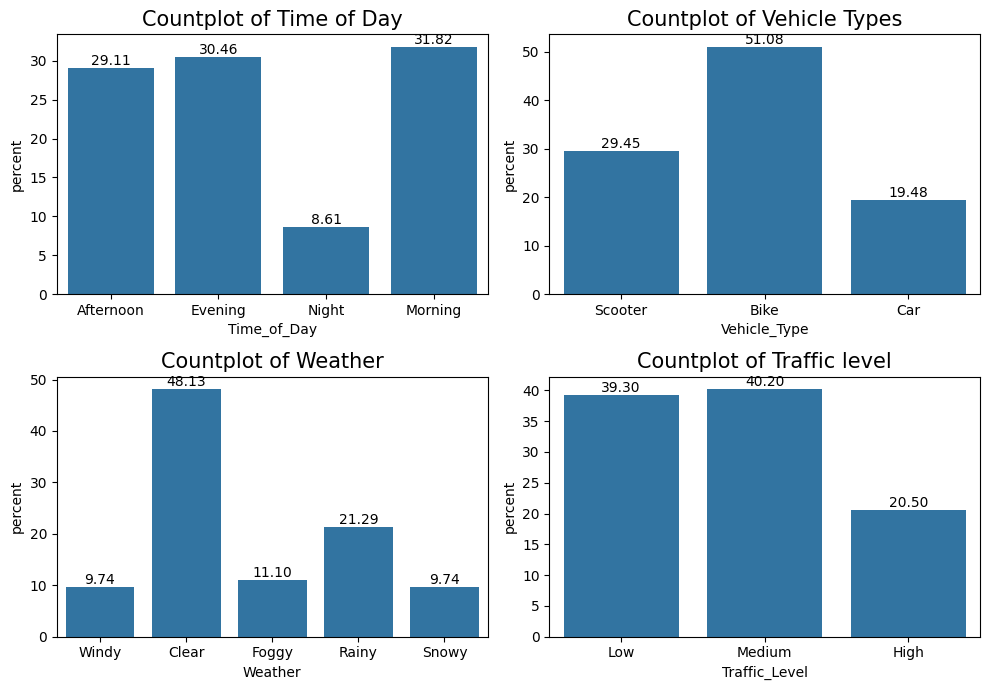
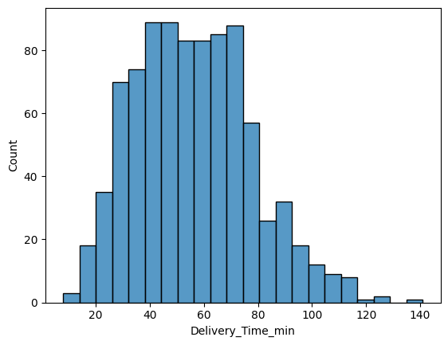
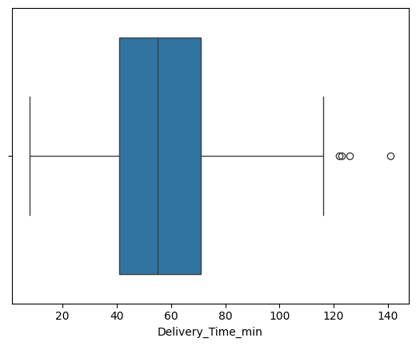
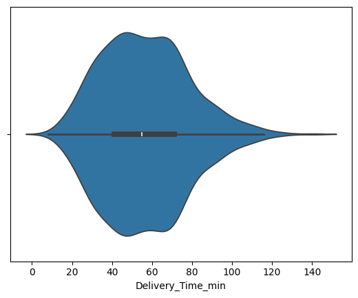
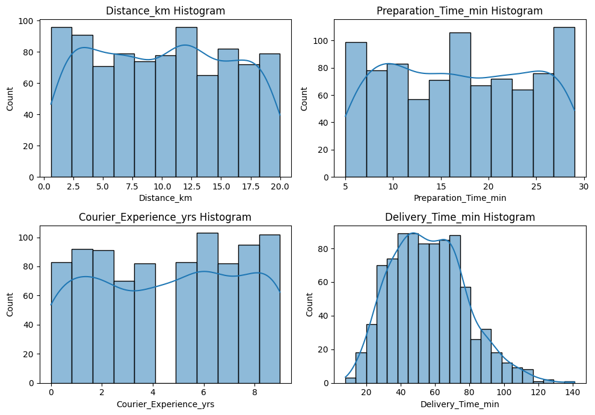

Course: INF-604: Data Analysis Lecturer: Sothea HAS, PhD
Objective: In this lab, you will explore the columns of a dataset according to their data types. Your task is to employ various techniques, including statistical values and graphical representations, to understand the dataset before conducting deeper analysis.
This dataset contains food delivery times based on various influencing factors such as distance, weather, traffic conditions, and time of day. It offers a practical and engaging challenge for machine learning practitioners, especially those interested in logistics and operations research. Read and load the data from kaggle: Food Delivery Dataset.
print(f"The dimension of the data is {data.shape}")data.drop(columns = ['Order_ID'], inplace=True)
The dimension of the data is (1000, 9)
data.dtypes.to_frame().T
Distance_km
Weather
Traffic_Level
Time_of_Day
Vehicle_Type
Preparation_Time_min
Courier_Experience_yrs
Delivery_Time_min
0
float64
object
object
object
object
int64
float64
int64
print(f"* Qualitative columns are {list(data.select_dtypes(include=['object']).columns)}")print(f"* Quantitative columns are {list(data.select_dtypes(include=['number']).columns)}")
* Qualitative columns are ['Weather', 'Traffic_Level', 'Time_of_Day', 'Vehicle_Type']
* Quantitative columns are ['Distance_km', 'Preparation_Time_min', 'Courier_Experience_yrs', 'Delivery_Time_min']
Are there any rows with missing values?
Yessssssssssssssssssssssssssssssss! Here they:
data.isna().sum().to_frame().T
Distance_km
Weather
Traffic_Level
Time_of_Day
Vehicle_Type
Preparation_Time_min
Courier_Experience_yrs
Delivery_Time_min
0
0
30
30
30
0
0
30
0
Are there any duplicated data?
Nope as shown below:
data.duplicated().sum()
0
Handling missing values is more complicated than you may expect. Here, we can simply drop those rows.
data.dropna(inplace=True) # 'inplace = True' is used to directly drop and modify the data from the data.data.shape
(883, 8)
B. Qualitative variables:
Create statistical summary of qualitative columns.
Create graphical representation of these qualitative columns to understand them better.
Explain each column based on the stastical values and graphs.
data[['Weather']].value_counts().to_frame().T # Compute the frequency
Weather
Clear
Rainy
Foggy
Snowy
Windy
count
425
188
98
86
86
data[['Weather']].value_counts(normalize=True).to_frame().T # Compute the relative frequency/ proportion
import matplotlib.pyplot as pltimport seaborn as snsfig, axs = plt.subplots(2, 2, figsize=(10, 7)) # I created 1 row and 4 columns of subplots with dimension 12 by 3sns.countplot(data, x="Weather", stat ='percent', ax=axs[1,0]) # Assign my graph to the first subplotaxs[1,0].set_title('Countplot of Weather', fontsize =15)axs[1,0].bar_label(axs[1,0].containers[0], fmt="%.2f", fontsize=10) # Round the percentagessns.countplot(data, x="Vehicle_Type", stat ='percent', ax=axs[0,1]) # Assign my graph to the first subplotaxs[0,1].set_title('Countplot of Vehicle Types', fontsize =15)axs[0,1].bar_label(axs[0,1].containers[0], fmt="%.2f", fontsize=10) # Round the percentagessns.countplot(data, x="Time_of_Day", stat ='percent', ax=axs[0,0]) # Assign my graph to the first subplotaxs[0,0].set_title('Countplot of Time of Day', fontsize =15)axs[0,0].bar_label(axs[0,0].containers[0], fmt="%.2f", fontsize=10) # Round the percentagessns.countplot(data, x="Traffic_Level", stat ='percent', ax=axs[1,1]) # Assign my graph to the first subplotaxs[1,1].set_title('Countplot of Traffic level', fontsize =15)axs[1,1].bar_label(axs[1,1].containers[0], fmt="%.2f", fontsize=10) # Round the percentagesplt.tight_layout()plt.show()

C. Quantitative variables:
Create statistical summary of quantiative columns.
Create graphical representation of these quantitative columns to understand them better.
Explain each column based on the stastical values and graphs.
Are there any columns with outliers?
data.describe().drop(index=['count'])
Distance_km
Preparation_Time_min
Courier_Experience_yrs
Delivery_Time_min
mean
10.051586
17.019253
4.639864
56.425821
std
5.688582
7.260201
2.922172
21.568482
min
0.590000
5.000000
0.000000
8.000000
25%
5.130000
11.000000
2.000000
41.000000
50%
10.280000
17.000000
5.000000
55.000000
75%
15.025000
23.000000
7.000000
71.000000
max
19.990000
29.000000
9.000000
141.000000
sns.histplot(data, x='Delivery_Time_min')

sns.boxplot(data, x="Delivery_Time_min")

sns.violinplot(data, x="Delivery_Time_min")

fig, axs = plt.subplots(2, 2, figsize = (10, 7))for i, va inenumerate(data.select_dtypes(include="number").columns): sns.histplot(data, x=va, ax=axs[i //2, i %2], kde=True) axs[i //2, i %2].set_title(f"{va} Histogram")plt.tight_layout()plt.show()

2. Cardiovascular Disease dataset
This dataset consists of 70 000 records of patients data, 11 features and a column of the presence or absence of cardiovascular disease. The data can be downloaded from kaggle using the following link: Cardiovascular Disease dataset.